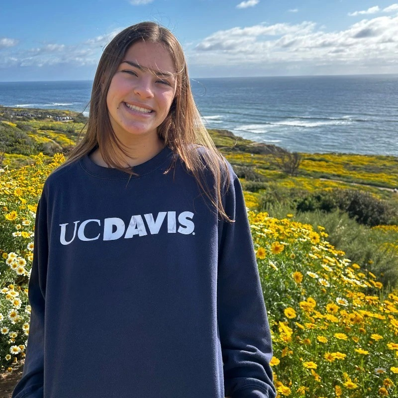
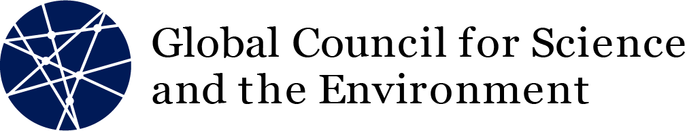
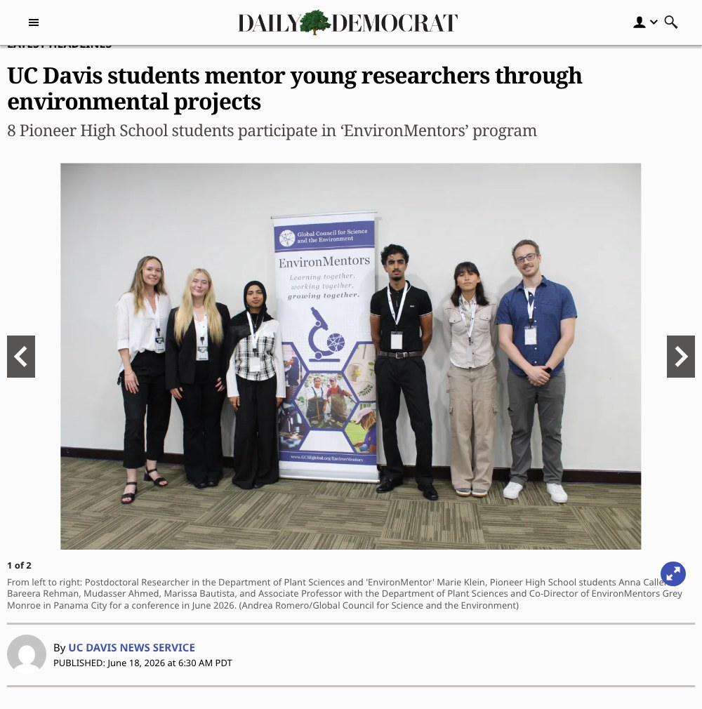

Mentor a young researcher.
One Pioneer High School student, one year, a real research project.
Your leadership team




UC Davis is a chapter of EnvironMentors, a national program of the Global Council for Science and the Environment.


Mentors come from labs all over campus.
Any department, any field.
In their words


Four Pioneer students. Panama City.
June 2026 — the GCSE International Science Fair. All four went on full scholarships.

And they won.
Anna Callens: first place overall — the top award of the entire international fair. Bareera Rehman: Best Presentation.

Front-page news in Woodland
The Daily Democrat, June 18, 2026.


What a year of mentoring produces
A real poster, presented at a real science fair.
Kekoa Nelson, PhD student · Ecology, Valliere Lab
Kekoa studies prescribed fire in California's serpentine meadows. Last year she and her mentee Hania tested the heat tolerance of tomato plants using sous vide water baths — a real research question run on kitchen hardware.
“Mentors and mentees alike bring valuable perspectives and knowledge into a project, connecting to make fruitful research.”
Kekoa Nelson · UC Davis mentor
Maya Shydlowski, grad student · Gaudin Agroecology Lab
Maya studies how soil ecosystems and crops hold up when water runs short. She's mentored for two years and is back for a third — last year co-mentoring a project on nitrate and plastic contamination in local compost.
“We get so caught up in research results and chasing the next grant that we forget that part of academia is teaching.”
Maya Shydlowski · UC Davis mentor
Marie Klein, postdoc · Plant Sciences
Marie mentored Marissa Bautista through her senior year, guiding a bird-diversity study in the Sacramento River watershed — after Marissa's junior-year project counting algal cells in the Arboretum waterway. Marissa's work went on to a scholarship at the international science fair in Panama.
“I've been in her position where I had to figure out my career and what I wanted to do next. I think a mentorship program, in which I can tell her about my experience and my story, is helpful to make decisions about her career. This group of mentees and mentors, forming this community on campus, is super valuable for anyone.”
Marie Klein · UC Davis mentor
Interested?
Scan the code and leave your name — we'll follow up with next steps, including how to register for PLS 297T.
environmentors.ucdavis.edu
Questions? gmonroe@ucdavis.edu · emonier@ucdavis.edu
![QR code linking to the EnvironMentors interest form]()